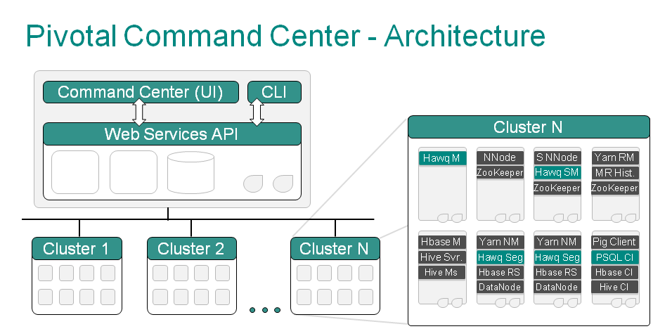

| Pivotal Command Center / PCC User Guide | |
This section provides a brief overview of Pivotal Command Center.
Pivotal Command Center (PCC) allows an administrative user to configure, deploy, monitor, and manage one or more Pivotal HD clusters. The Command Center has both a graphical user interface and command-line tools to deploy, configure, monitor, and administer Pivotal HD clusters.
PCC provides complete life cycle management for Pivotal HD Clusters by performing the following two main groups of functions:
These functions are served through a set of RESTful web services that run as a web application on Jetty server on the Command Center admin host. This is called gphdmgr-webservices. This web application stores its metadata and cluster configuration for Pivotal HD cluster nodes and services in the Pivotal Command Center PostgreSQL database. It makes use of a Puppet Server to perform most of its HD cluster installation and configuration. It also has a polling service that retrieves Hadoop metrics from the cluster and stores them in the Command Center PostgreSQL Database at periodic intervals.
The PCC UI provides the user with a single web-based graphical user interface to configure, deploy, monitor, and manage one or more Pivotal HD cluster. This web application is hosted on a Ruby-on-Rails application which presents the status and metrics of the clusters. The system metrics data is gathered by the Performance Monitor (nmon) component. The Command Center UI invokes the APIs to retrieve all Hadoop-specific cluster metrics and status information. This includes the Hadoop metrics that was previously retrieved by the polling service.
PCC provides a command-line interface (CLI) for more advanced users to perform installation, configuration and uninstalls. This tool invokes the APIs to install and configure the various Pivotal HD services. The CLI also provides a way to perform other administrative actions such as starting and stopping clusters. For how to use this CLI, refer to PHD Installation and Administration.
Pivotal Command Center comes with a Performance Monitor called nmon (for node monitor). This makes use of a highly scalable message passing architecture to gather performance metrics from each node that Command Center monitors. This consists of a master daemon that runs on the Command Center admin host and an daemon that runs on all the cluster nodes that report system metric information to the master. This includes metrics such as CPU, memory, disk I/O and network usage information.
The master on the admin host dumps the system metrics it receives from the agents on the cluster nodes into a PostgreSQL DB. This is then queried by the Command Center UI application to display its cluster analysis graphs.
The agents hosts are deployed throughout the cluster during Pivotal HD cluster deployment itself (see Using PCC for details).
The agents are deployed as services on each host, including on the Pivotal Command Center admin host.
To stop or start the service run the following as root:
# service nmon stop # service nmon start
Pivotal Command Center makes use of a PostgreSQL Database to store the following:
For more details about Pivotal HD Enterprise, see PHD Installation and Administration.
